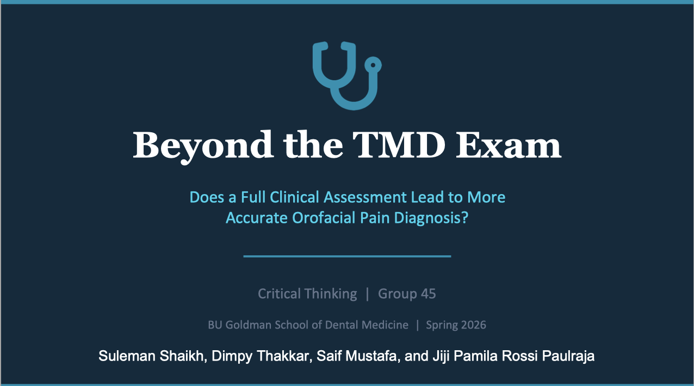
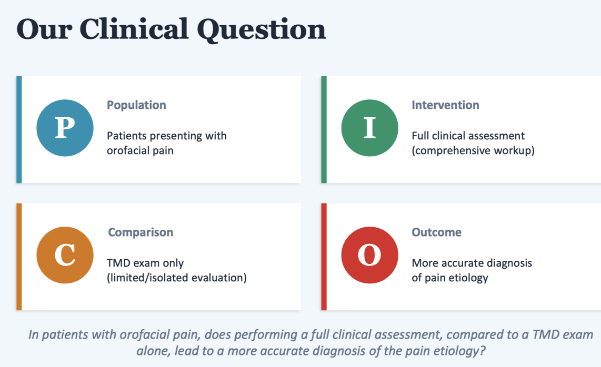
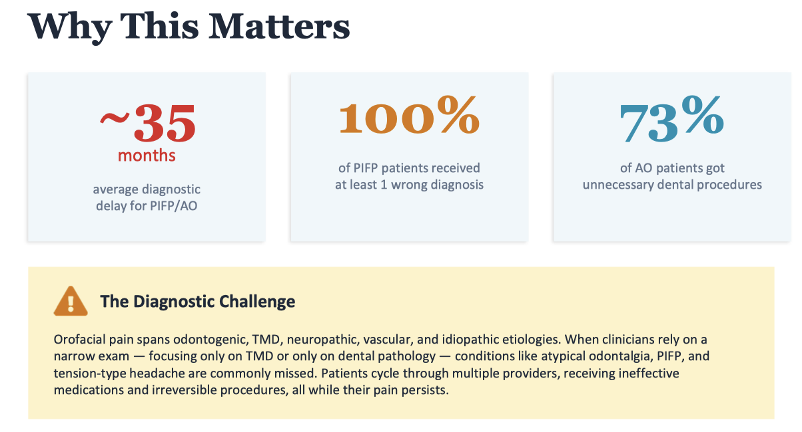
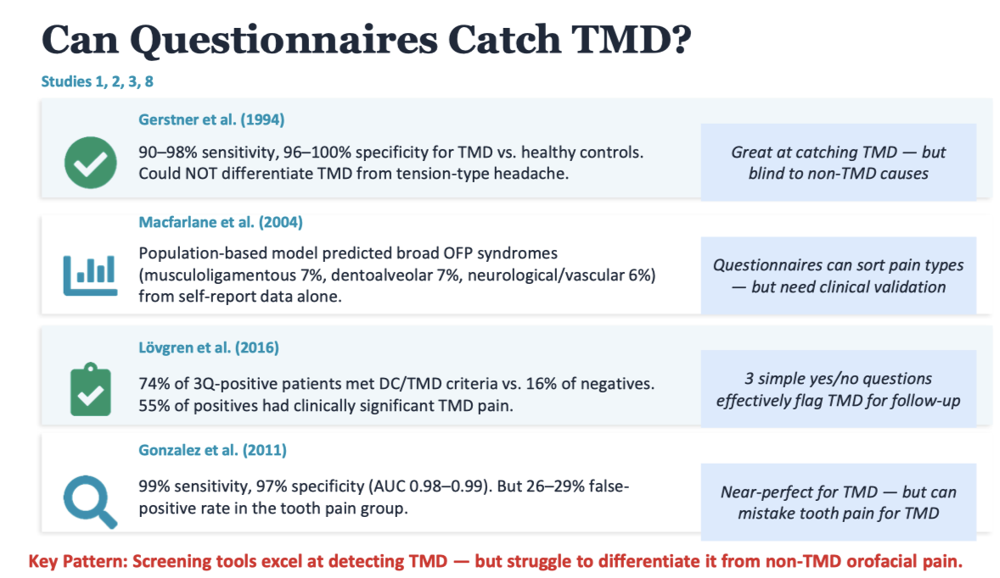
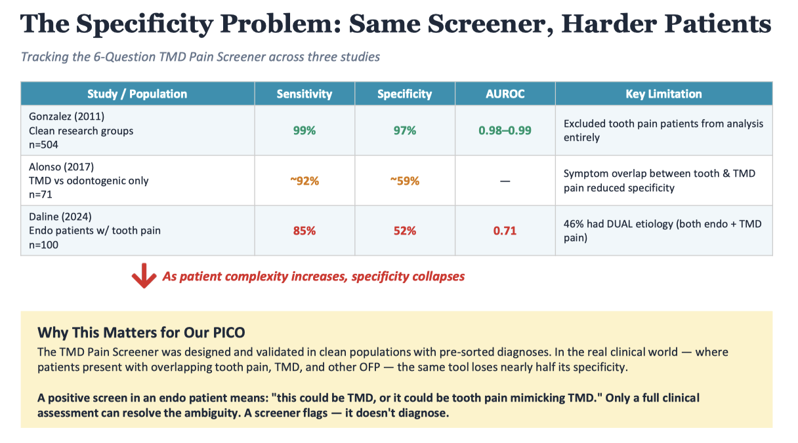
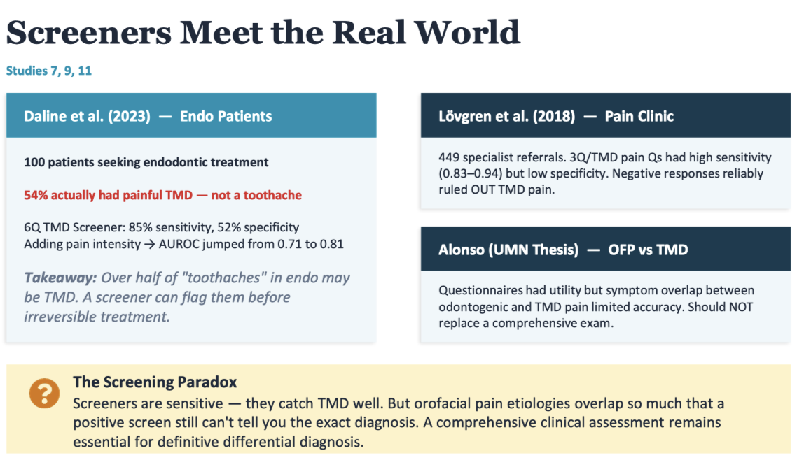
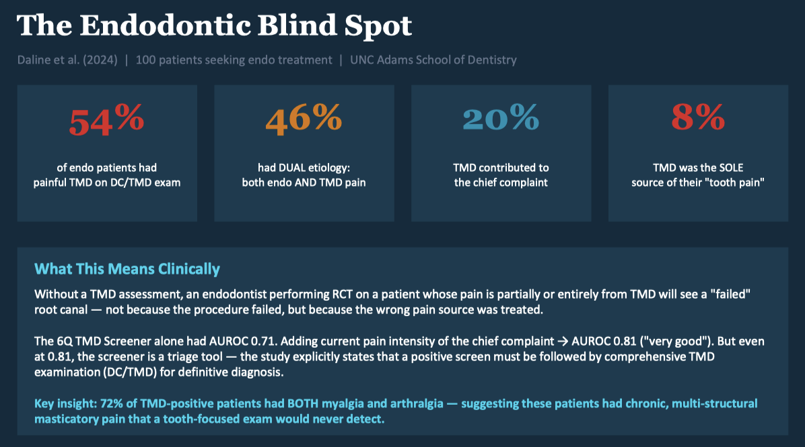

Suleman Shaikh • Group 45 • BU Goldman Spring 2026
Sensitivity = smoke detector going off when there's fire. Specificity = staying quiet when you're just cooking. High Se + low Sp = beeps at everything including burnt toast.

Just your intro. Stand tall, pause after "orofacial pain diagnosis," make eye contact. Don't rush.


394 PIFP/AO patients, 4 Beijing hospitals. 34.8 mo avg delay. Median 7 consultations, 5 ineffective prescriptions. AO: 73.3% unnecessary dental procedures. 100% misdiagnosed at least once.
HIGH WEIGHT — largest PIFP misdiagnosis study34 PIFP patients, Jordan. 19.3 mo delay. 3.7 providers, 2.3 misdiagnoses. 73.5% unnecessary procedures. NONE referred to OFP specialist.
MEDIUM — small but first to detail the diagnostic journey
13-item Q. n=307. TMD vs controls: excellent. TMD vs headache: failed.
MEDIUM — old, no gold-standard referenceUK, n=1510. Multinomial logistic regression, 6 predictors. Sorted OFP into 3 types. Kappa=0.5.
MEDIUM — only study classifying ALL OFP types7,831 adults, routine checkups. 300 examined with DC/TMD. NPV 0.92-0.99 in general practice.
HIGH — huge real-world sample, validated vs DC/TMDORIGINAL TMD Pain Screener. n=504. From 49 items to 6. Se 99%, Sp 97%. Excluded tooth pain. 26-29% false+ in odontogenic group.
HIGH — the screener everyone uses; its limitation is our argument
Pre-sorted. Tooth pain excluded. Se 99%, Sp 97%. Artificial perfection.
n=71. TMD vs odontogenic. Sp ~59%. Too much symptom overlap.
n=100 consecutive endo. Sp 52%. 46% dual. Dual-board examiner.

Adding NRS pain intensity: AUROC 0.71→0.81. 8% had TMD as SOLE source of "tooth pain."
HIGH — first to validate screener IN endo3Q/TMD in specialist Amsterdam clinic. n=449. Se 0.83-0.94, Sp 0.41-0.55. Screeners direct differential in specialist settings.
HIGH — proves accuracy is population-dependentn=71. DePaQ: Se 85%, Sp 11%. TMD Screener: Se 92%, Sp 59%. Neither adequate.
MEDIUM — small but directly tests our question
n=100 consecutive. Examiner dual-board OFP+endo. Blinded. Full DC/TMD + full endo workup.
54% TMD. 46% dual. 20% TMD contributed. 8% TMD sole source. 72% myalgia+arthralgia.
Screener: AUROC 0.71. +pain intensity: 0.81. Positive screen must be followed by full exam.
HIGHEST WEIGHT — your section's anchor